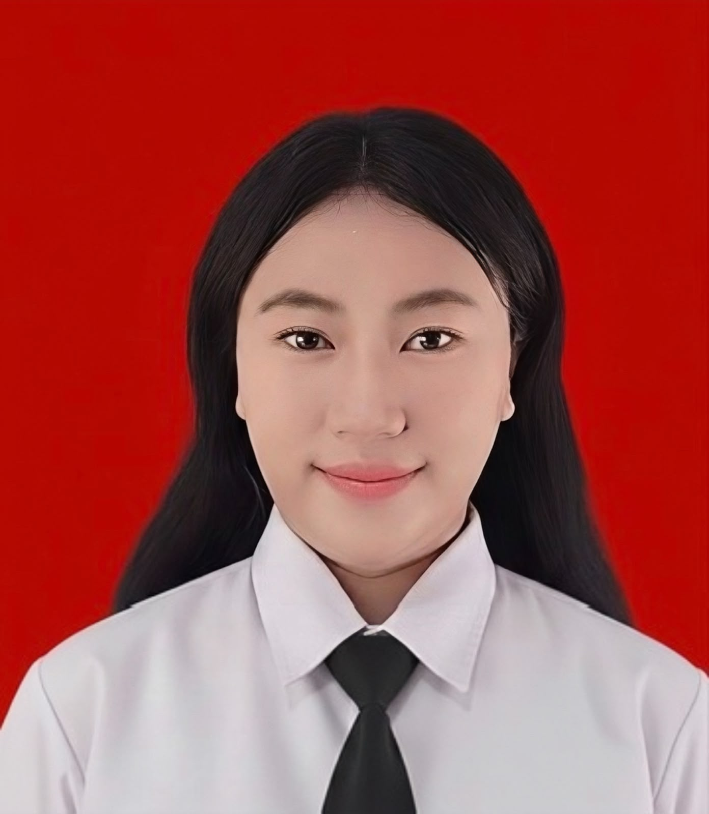

Kepanitiaan Acara Paskibra
Aku pernah terlibat dalam kepanitiaan acara Paskibra. Melalui pengalaman ini, aku belajar bekerja sama dalam tim, berkomunikasi, serta menjalankan tanggung jawab untuk mendukung kelancaran kegiatan.
Mahasiswa Pendidikan Teknologi Informasi di Universitas Negeri Surabaya yang sedang belajar membuat website.

Halo, aku Amelia Azzarah! Aku adalah mahasiswa Pendidikan Teknologi Informasi di Universitas Negeri Surabaya (UNESA). Saat ini, aku sedang memulai perjalanan untuk mengenal lebih jauh dunia teknologi, khususnya pemrograman dan pengembangan website.
Aku termasuk orang yang suka bertemu orang baru, mencoba hal-hal baru, dan mengeksplorasi ide kreatif. Dunia coding masih terbilang baru buatku karena sebelumnya aku belum pernah mempelajarinya. Namun, aku ingin terus belajar, menambah pengalaman, dan mengembangkan kemampuan yang aku miliki.
Di luar perkuliahan, aku suka mendengarkan musik, makeup, dan menghabiskan waktu di coffee shop. Aku percaya bahwa setiap pengalaman bisa menjadi kesempatan untuk mengenal diri sendiri dan berkembang menjadi lebih baik.
Kemampuan yang aku miliki
Aku senang bertemu orang baru, bertukar pikiran, dan membangun hubungan dengan orang lain. Bagiku, komunikasi menjadi salah satu cara untuk mendapatkan pengalaman dan sudut pandang baru.
Melalui kegiatan organisasi dan kepanitiaan, aku belajar bekerja sama dengan orang lain, menghargai pendapat, dan menjalankan tanggung jawab bersama.
Aku memiliki pengalaman terlibat dalam kepanitiaan dan kegiatan organisasi. Dari pengalaman tersebut, aku belajar mengenai tanggung jawab, persiapan kegiatan, dan pentingnya koordinasi.
Aku tertarik mengeksplorasi ide-ide baru dan mencoba berbagai hal yang bisa mengembangkan kreativitas. Aku juga memiliki ketertarikan pada makeup sebagai salah satu bentuk ekspresi kreatif.
Aku sedang mengembangkan kemampuan di bidang teknologi, khususnya pemrograman dan pengembangan website. Meskipun masih pemula, aku ingin terus belajar dan mencoba hal-hal baru.
Pengalaman dan keterlibatan
Aku pernah terlibat dalam kepanitiaan acara Paskibra. Melalui pengalaman ini, aku belajar bekerja sama dalam tim, berkomunikasi, serta menjalankan tanggung jawab untuk mendukung kelancaran kegiatan.
Aku terlibat dalam kegiatan Gold Engineering Club pada Seksi Bidang Sipil. Kegiatanku berkaitan dengan program kerja serta lomba yang diselenggarakan oleh kampus sesuai dengan bidang tersebut.
Pengalaman ini memberiku kesempatan untuk mengenal kegiatan organisasi, belajar berkoordinasi, dan ikut berkontribusi dalam menjalankan program kerja.
Saat ini, aku sedang menempuh pendidikan Pendidikan Teknologi Informasi di Universitas Negeri Surabaya. Aku mulai mempelajari pemrograman dan pengembangan website sebagai langkah awal untuk mengembangkan kemampuan di bidang teknologi.
Bagiku, perjalanan ini merupakan kesempatan untuk terus belajar, mencoba hal baru, dan mempersiapkan diri untuk menciptakan karya di masa depan.